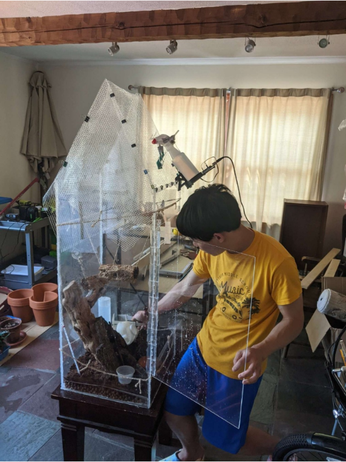
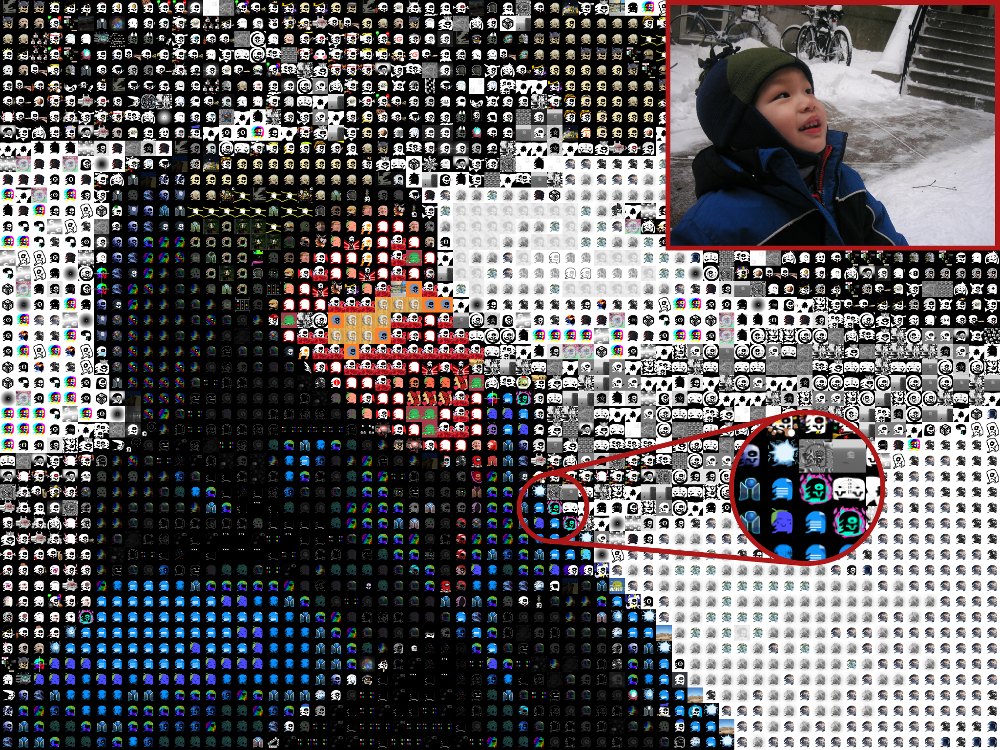
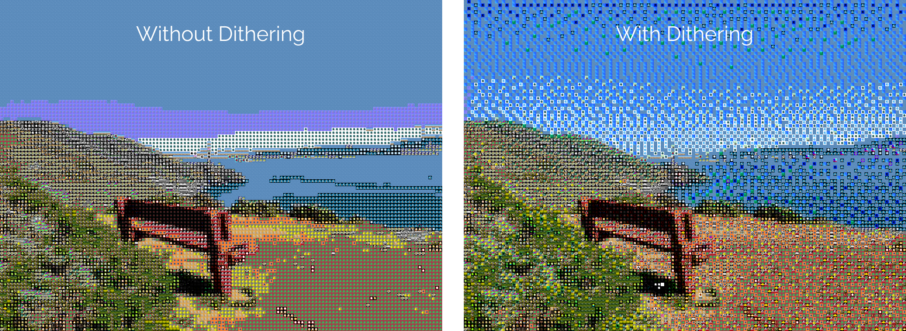
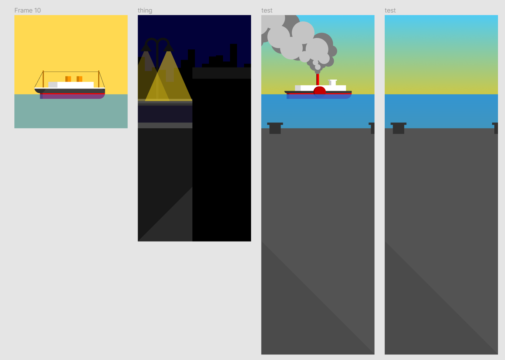
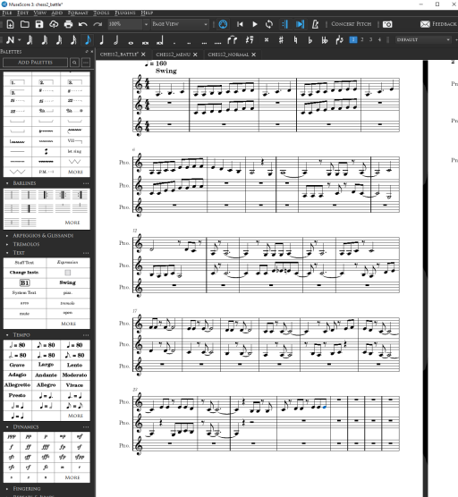

Engineering
CompSci
Art
Activities
Engineering
CompSci
Art
Activities
I first learned how to code using Unity in 9th grade, making video games during the pandemic. I have been an active member of the United Computations Club at Gunn, and an organizer for their annual GunnHacks hackathon since 10th grade. I also have been participating in the Computer Science Club at Ward Melville.
Currently, I am familiar with, in order of competence: C#, Unity, C, HTML CSS JS, Python, and a bit of Kotlin.

'22
A large collaborative Christmas gift for 11th grade involving "Bad Apple!!", image processing, music arranging, and recording.
Every year at Gunn High School, the orchestra holds a white elephant gift exchange. My friend is known for going above and beyond every year, and in 2022, alongside a team of seven others, we sought to make a cover of Bad Apple!!, with everything being recreated by us.
Creating the video was my part, given I had experience in programming video and image processors.
Using knowledge gained from my previous "Geckoinator" mosaic maker, which replaces pixels in an image with smaller tiled images, I made an adaptation of the software for my purposes. I inputed the frames of Bad Apple into the software then replace each pixel with a "light" or "dark" image based on brightness. I ran the program in batches of 1000 frames over the span of six days. Once the frames were ready, I utilized FFmpeg to stitch the video together.

Due to my experience in creating musical arrangements and playing violin, I was able to contribute significantly to the musical aspects of the project as well. With 5 violinists, 2 cellos, a trumpet, and voice, we needed to arrange the song for our unique group composition. I started off the arrangement by creating the backbone of the score, adding in all the main rhythms and melodies. Then, my friend finished the arrangement, filling in the gaps, polishing, and proofreading. I recorded the Violin V part using my five string violin for the extra range.
My final task was to make a credits frame, which I created using my Figma skills, and assisted in design for the bilingual captions. Then the video, audio, captions, and credits, were combined together to produce the final video.
'22
A motion sensing light switch using an arduino. Designed to make the basement much more convinient to access.
To test out my new arduino skills, and help solve some problems around the house. I decided to go for a motion activated light switch positioned at the bottom of a frequently travelled staircase.
I wired up the design using an arduino as the core. I pulled from my programming experience to make the switch as smart as possible, including automatically turning off after a few minutes. I further pushed my skills by adding two buttons which would be an on/off switch and a button which turns off the motion detector along with their respective indicator lights. After wiring the electronics, I designed a 3D printable shelf and box to mount everything in.


'22
Two fractal generators in C, started in 9th grade and revisited in 11th.
When I was taking CS50x, I was introduced to the concept of recursion. With this new knowledge, I wondered if I could use this to make some fractals. The first one I wanted to try was a Sierpinski triangle. After finishing the CS50 assignment for the week, I got to work on my generator using C. The generation method I went for was duplication, I took the previous shape, and added on two more copies of it below.

After more than a year, I was messing around with C during a CS club meeting. This time I aimed for the much more difficult dragon curve to recreate. Like the first, I would use C for added challenge. It took me 5 days to complete. Unlike with the first fractal, I had no idea where to start with the dragon curve. Eventually I settled on using a rotational method to create the fractal.
To convert my idea into code, I decided to draw out my thinking onto paper. I noticed some patterns in the iterations when I drew them out, and came up with a step-by-step algorithm to get the job done.

With a method figured out, it was trivial to implement it into code. By the morning of day 5, I had finished the program. It worked for all iterations I tested, up to 20.

As the final touch to the programs, I made a C# script that converted the ascii outputs of the C code into pixels on an image which greatly improved their viewability.

'22
A pixel counting program optimized for fish created in 11th grade for my Dad's lab.
The lab that I had been designing 3D printed parts for needed to determine the ratio of light to dark pixels on the fin of a fish. Using my experience in image processing and analysis, I created a simple console application in C# which calculated the ratio and could output results of an entire folder of images to a spreadsheet. To maximize accessibility, I later rewrote the application in JS and hosted it on Github. It produced nearly identical results with the console app and anyone could easily run it with internet access.


'22
A rapidly developed automatic gecko mister during the summer after 10th grade.
With an impending one week trip to London coming up, I worried about my geckos not getting enough moisture, so I needed to quickly make an automatic misting machine.
Fortunately, I had been learning Arduino recently, and I thought about using one to activate a spray bottle pointed into my geckos' cage. With less than a week left to produce and test the device, I had to work fast, using a combination of old parts from other projects and new parts. The arduino mounted on the body of the spray bottle would turn a servo every 30 minutes. The servo was attached to the spray bottle with zip ties and pulled the trigger with a steel wire. the entire assembly would hang on the top of the gecko cage aimed downwards.

In the few days left, I would run it overnight to test how much water it used. It turned out to be fairly efficient, only using a fraction of its maximum capacity. On the day of my departure, I filled the bottle completely and started the contraption. Every 3 hours, it would also reboot in case the arduino ran into a problem.
When I returned from London, it was still going with around a quarter of the water left. My geckos were also alive and well, sucessfully achieving the goal.
'22
An evolutionary solution to the bin packing problem created in 9th grade.
For my case project, I needed to know how many wood planks I needed to buy. I knew the sizes of all the final pieces I needed, but I had to fit those pieces onto the planks in a way to minimize the amount of planks used. This turned out to be an application of the "bin packing problem", and I did some research into possible solutions. The solution I used was a genetic algorithm, which gradually approaches a solution using a similar process as natural selection. The algorithm got an answer of 7 planks, which after checking with another program, was indeed the minimum amount of planks needed. From this project, one of my main takeaways was how a genetic algorithm could be used to solve difficult problems, without actually "solving" them outright.

'21
A customizable mosaic maker created in 9th grade. It is one of the most complete and advanced piece of software I have created.
I wanted to design something that could create mosaics from a selection of smaller images.

A mosaic maker replaces pixels in an input image with smaller images pulled from a collection that closest matches each pixel's color. As my collection, I used a set of images I collaboratively drew with a friend of mine. The code is written in C# and built upon my image processing experience from taking a computer science class.After the basic framework was finished, I introduced a feature to improve the quality of the images using Floyd-Steinberg dithering, which blends pixels of different colors to fill in limitations in color.
I also introduced batch processing and multithreading in order to be able to process videos, and of course...
I would probably consider this one of my, if not the, most technically challenging programs I have ever written. This used a lot of skill involving array processing and algorithms.

'21
A portfolio website started in 9th grade you are reading right now.
This is the product of over a year of development, designs, and redesigns. This journey technically started when I took Cs50 in the summer of 2021. The second to last assignment was to make a homepage for yourself using HTML, CSS, and JS. The page I designed at the time was not really a serious attempt at a homepage, and more of a testing ground. The most impressive part of the website was playing Bad Apple in ASCII complete with synced audio. You can find that version of the website here. Some time later, I returned to start a serious attempt at a personal website. Before I could get started though, I wanted to have a design down. At the time, I was into the art-deco style, and wanted to try to emulate that in the design. My first few designs were were focused on blending the content more like a poster than a website.
Unfortunately, my artistic talents were not sufficient for such a complex design. So, I was back to the drawing board. I decided to keep the theme of unique coloration with a deep orange background and blue-red balls as the central element. This version is still up here. I am still relatively proud of this version of the website, especially of the spheres. When the window was wide enough, the pattern would actually repeat itself using some CSS trickery. The projects section also got its general design and categories in this version. Slowly, I continued to improve the design.

However, because of the complex JS and code involved, this iteration of the website was slow and resource intensive. The projects section was also outdated. The third and current version of the website began with design once again. This time, I wanted to simplify things. I decided to split each category into its own page to make organization more clear. For the new color scheme, I used a mint green background, and white accents. Originally, I was going to use a list type structure for the projects, but it did not work out very well. After extensive versions, I finally settled on the current square tile style with pop-up window description. All designs can be found in the Figma. Implementing this website should have been relatively easy, but it became a nightmare. First, I decided to not use JS at all, and everything had to be HTML CSS. This was the biggest head scratcher of the project. Very few people have attempted to do what I set out to do, probably for good reason too. Somehow against all odds, I ended up with this completely functional website, with no JS! By now, my projects list had grown substantially. I had over 60 different projects that all needed descriptions, links, and photos. This was the other nightmare. If I were to do this completely in the IDE, I might even say it is impossible. Instead, I created a spreadsheet and wrote out all the information there. Based on this, I wrote another program to convert the spreadsheet into HTML, which could then be copy pasted into the website; and finally, here we are.
Website Github • Cs50 Website • Old Website • Old Website Github • Figma • Spreadsheet • Translator Github

'21
A hackathon project related to chess in 9th grade.
Every year at Gunn High School, the United Computations club would hold GunnHacks. Gunnhacks is a hackathon where you can get together with up to 3 others and work together to create a project.
Before I became an organizer for GunnHacks 8.0, a couple friends and I and participated in 7.0. For our project, we decided to make online chess, but with a twist! There would be a set of bonus rules which can be added to each game and combined to create a unique experience. My role in this project was management and music, and I also contributed to the code, art, design, and ideas.

For music, I composed 3 tracks in a swing style, which I had wanted to try out for a while. Originally I planned to record the tracks with my violin, but due to the time constraint I used a synthesized piano.
As part of management, I organized and typed up the Devpost page. Even though we did not place in the competition, we enjoyed working on the project together and produced a product that we are proud of.

'21
A collection of software for the Gecko Collection started in 9th grade.
The Gecko Collection is a collaborative art project of variations on a single base image, and as it grew, I wanted to make several offshoot software integrations.
The front-end project was a website where information on the collection is displayed and users can browse the collection. The website is completely coded from scratch and I learned how to use Firebase to easily and conviniently host it for free.
To provide the images for the website, I made a locally hosted API. The API is coded in C# and fetches images from Google Drive. I also added a secondary feature that assists in organizing the drive folder and marking information on each image. I was able to get my API onto an https connection, which allows anyone building an application to use it.
Website • Website Repo • API • API Repo

'21
A web app for my new school created just before 10th grade.
After seeing the success and utility of UGWA and subsequent rise of WATT at my old school, I wanted to create a similar utility at my new school, Ward Melville. Before the school year began, I made TheWard with some basic features, like schedule and assignments. Throughout the year, I upgraded it with a club list, bell, and a calendar. At the beginning of Junior and Senior year, I updated the website for the new school year
'21
Continuing the tradition of playing Bad Apple in strange or unexpected places! A collection of various tools I made for my bad apple related projects.
Most of these programs convert the frames of the video into ascii or other formats. It was used to create this as part of a CS50x project.

'21
An experimental mobile app in Unity for my dad in 9th grade.
Walking home at night, my dad used an app on his phone to display a pattern to make himself more visible to cars. However he wanted to be able to make better patterns than the ones available in the app. Using my Unity experience, I made a mobile app made and displayed these patterns. It also had full control over color and speed the patterns player. I also managed to play Bad Apple on it.
'20
A Discord bot that was one of my first coding projects, created in 9th grade.

I created Geckobot back in 9th grade as an activity for the United Computations Club at Gunn High School. This was my first real experience coding outside of Unity and I would use this as a tool to help me understand C# better. Geckobot started as a bot that saved and sent text using key value pairs. Eventually the bot would include Gecko Collection Integration, DecTalk text-to-speech, Significant Figures Counting, some limited quantum computing using Q#, and more.

'20
A video game centered around an escaped gecko in California, started during 8th grade.

After beginning to code with Unity, this was my first project using it. Intended to be a rhythm game combined with a platformer. Unfortunately this project never got properly finished, the current prototype demonstrates the basic mechanics and a sample of a level. Although the game never got finished, most of the game was already planned out, like the core mechanics, story, and music.